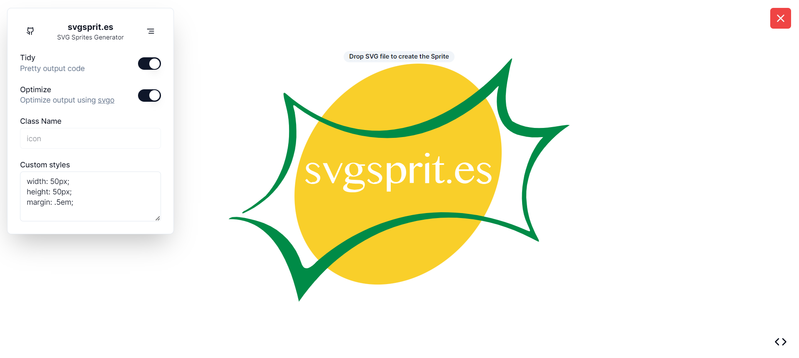
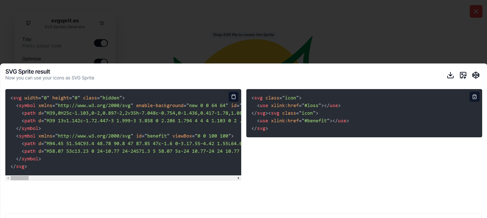
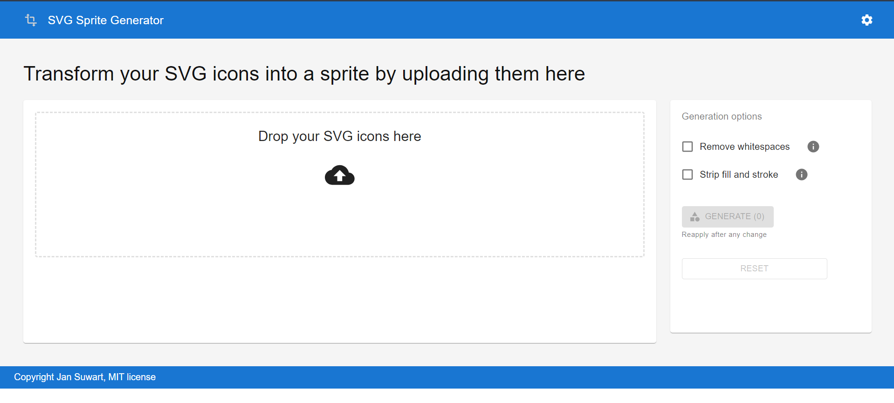
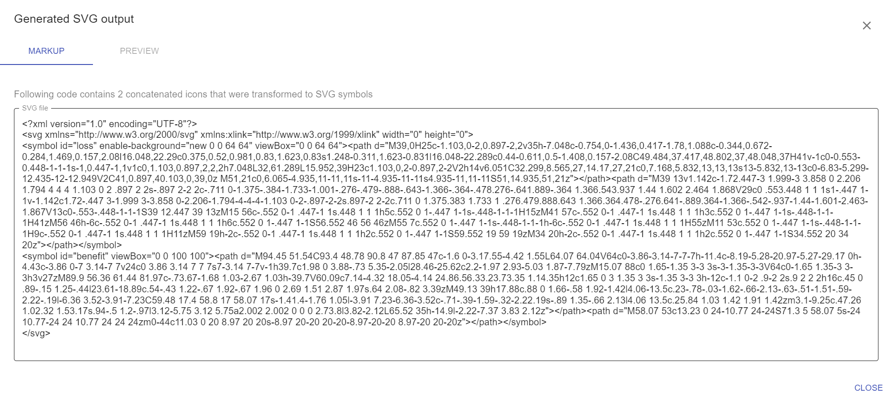
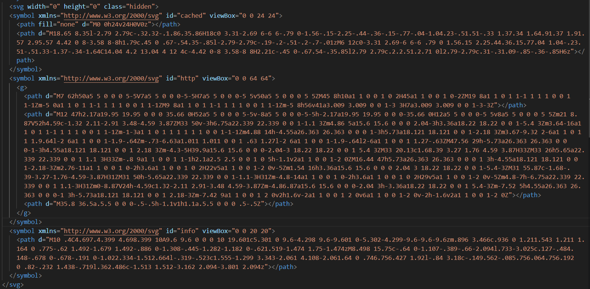
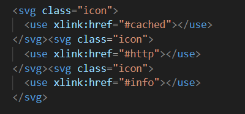

SVG sprites, SVG dosyalarınızı tek bir dosya içinde toplamanıza ve yönetmenize olanak tanıyan bir tekniktir.
Bu, birden fazla SVG dosyasını tek bir SVG dosyasında bir araya getirerek, ağ trafiğini ve sunucu isteklerini
azaltmanıza yardımcı olur. Genellikle web geliştirme projelerinde kullanılır ve simgeler, logolar veya diğer
tekrar eden grafik öğeleri gibi unsurları tek bir dosyada birleştirir.
SVG spriteları oluşturmanın birkaç farklı yöntemi vardır, ancak temel olarak SVG dosyalarınızı bir araya
getirip, her bir SVG öğesini bir ID ile işaretleyerek, istediğiniz yerde bu öğeleri çağırabilirsiniz. CSS veya
JavaScript gibi teknolojilerle bu öğelere erişebilir ve kullanabilirsiniz.

Bu Sayfamızda sayfanın herhangi bir yerine tıklayıp birleştirmek istediğiniz svg dosyalarınızı seçin.Tabi isterseniz direkt olarak dosyayı sayfa da sürükleyerek de bırakabilirsiniz.


Bu sayfamızda ister tıklayıp dosyalarınızı seçip ister dosylarınızı sürükleyerek svg dosylaranızı seçin.



Birden fazla küçük SVG dosyası yerine tek bir SVG sprite kullanmak, HTTP isteklerini azaltır ve sayfa yüklemesini hızlandırır. Bu, web sitesinin performansını artırabilir.
Tek bir SVG sprite dosyasını kullanmak, tarayıcı önbelleğine alınabilir ve tekrar kullanıldığında daha hızlı yüklenmesini sağlar.
SVG dosyaları vektörel olduğu için herhangi bir boyuta ölçeklenebilirler. Bu da sprite'ların farklı ekran boyutlarına ve cihazlara uyum sağlamasını kolaylaştırır.
Tek bir SVG sprite dosyası kullanarak, tüm ikonları veya grafik öğelerini bir araya getirirsiniz. Bu, dosya ve klasör yapısını basitleştirir ve kodu daha temiz hale getirir.
SVG sprite dosyası, içerdiği öğeler arttıkça boyutu büyür. Bu, indirme süresini uzatabilir ve ilk sayfa yükleme süresini artırabilir.
SVG sprite'ları kullanmak, bazı durumlarda kod karmaşıklığını artırabilir. Özellikle büyük projelerde, hangi simgenin nerede kullanılacağını ve nasıl çağrılacağını yönetmek karmaşık hale gelebilir.
SVG sprite'lar, içerik değişikliklerini yönetmeyi zorlaştırabilir. Eğer içeriğiniz sık sık değişiyorsa veya dinamik olarak oluşturuluyorsa, SVG sprite'lar bu durumu yönetmeyi zorlaştırabilir.
SVG sprite dosyası, diğer kaynak dosyaları gibi indirilmelidir. Bu, sayfa yüklemesi için ek bir istek oluşturabilir ve başlangıçta bir miktar ek yükleme süresi ekleyebilir.